LOVE,
Overview
LOVE, is an immersive exhibition that centers on a real-time digital interaction between visitors and space. Created collaboratively by 13 artists and presented at Renfrow Smith Gallery at Grinnell College, the project uses depth-camera tracking and projection to visualize audience movement as part of the artwork.
As visitors move through a field of hanging postcards, their bodies are tracked and translated into glowing, fluid forms projected onto the wall. This live visualization responds to presence, scale, and motion, turning navigation through the gallery into a shared, visible experience. The digital system creates a feedback loop between physical movement and visual output, reinforcing the exhibition's themes of travel, memory, and connection.
Alongside the interactive projection, the exhibition presents 39 postcard designs by the participating artists. Visitors are encouraged to move among the postcards, handle them, and ultimately take them away, allowing the exhibition to continue beyond the gallery through acts of sending and exchange.
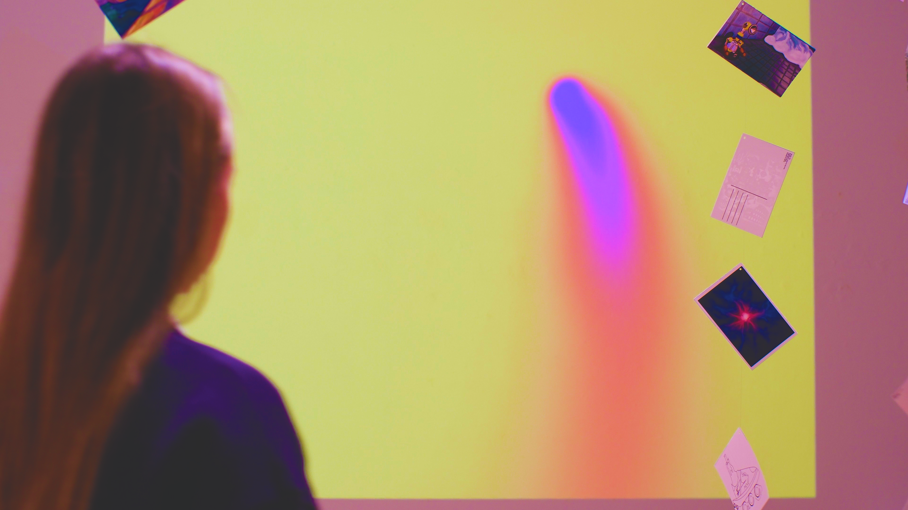
Goals
I led the initial ideation of the exhibition experience and spatial layout. Along with two other artists, I installed the postcard strings and "LOVE," wall, and I was fully responsible for designing and implementing the interactive system.
My goals for the exhibition were to:
Create at least three forms of physical interaction that encourage movement through the space
Visualize visitor movement in real time to comment on the physicality of memory and travel
Build a functional system from multiple digital devices that feels intentional and organic within the gallery
Technical Implementation
Data Processing
I used an Orbbec Astra depth camera to capture visitor movement. Since this camera is not natively supported by TouchDesigner, I adapted a custom script by brutesque to bring the depth data into the software. The incoming data was processed using luminance thresholding, leveling, and resolution adjustments to create a high-contrast image suitable for blob tracking.
Because the laptop connected to the camera could not handle the simulation load, I ran TouchDesigner remotely. The camera fed data directly to the local laptop, while I accessed and controlled the system through Remote Desktop. To enable communication between devices, I set up a secure virtual network and used NDI Out/In TOPs to transmit image data over IP.
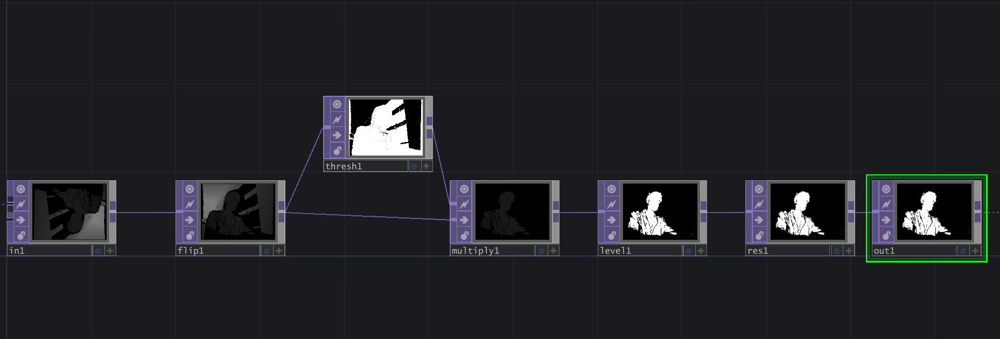
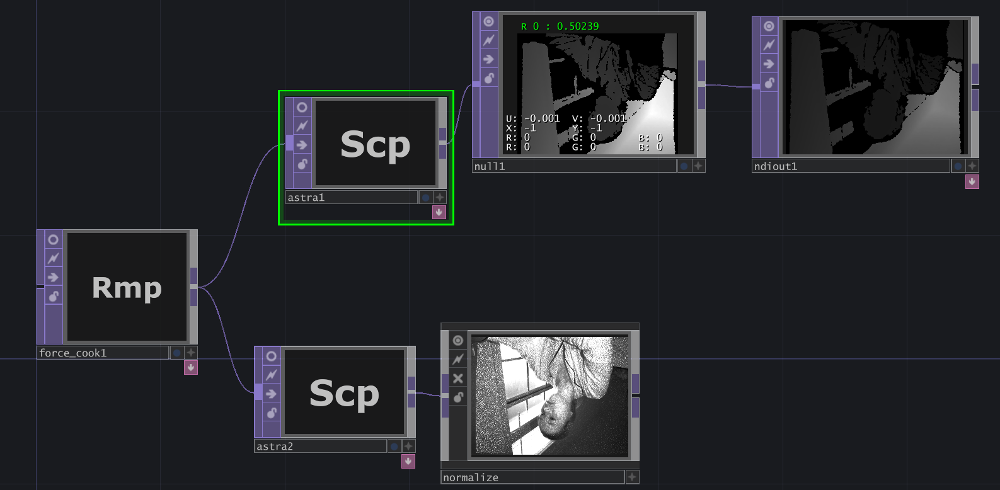
Data Visualization
Through testing, I calibrated the blob tracker to detect the size range of an average human body. I extracted UV coordinates and width/height data from each blob and used instancing to generate circular SOPs that reflected both position and scale.
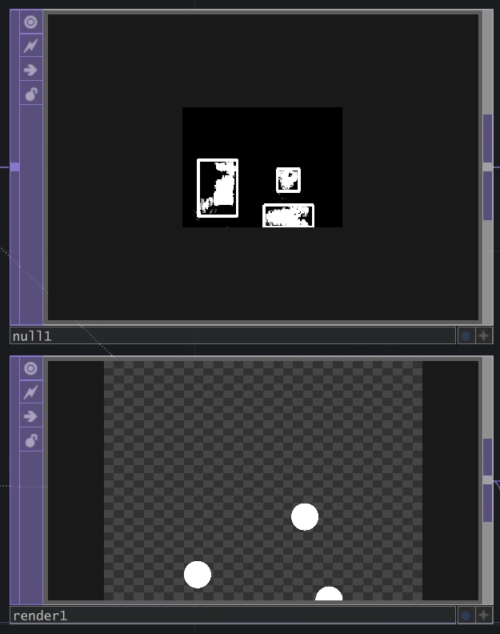
Post-Processing and Visual Style
For the visual language, I created an aura-like effect using a complementary yellow and purple color palette. These colors were chosen through testing and proved effective in a medium-lit gallery, while supporting the exhibition's emotional tone of nostalgia, warmth, and memory.
The effect was built using a feedback loop. With each iteration, opacity was reduced to allow motion trails to fade over time. I applied controlled blurring and pre-shrinking to maintain fluid motion and reduce visual lag. A subtle upscale at the final stage enhanced the aura effect and helped soften movement artifacts. Color was finalized using a lookup table.
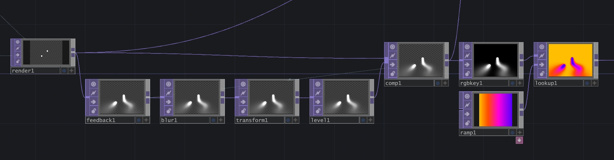
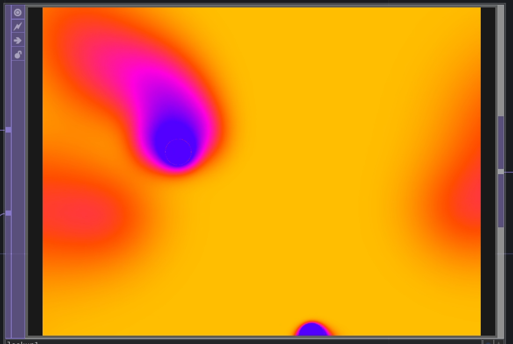
Projection and Hardware Setup
I used a short-throw Epson projector positioned approximately six meters from the wall. The image filled the entire horizontal wall space. I built a wooden shelf to mount the projector at about three meters high, angled slightly downward to avoid interference from visitors' bodies. The postcard strings were manually adjusted to avoid intersecting with the projected image while still maintaining the immersive labyrinth layout.
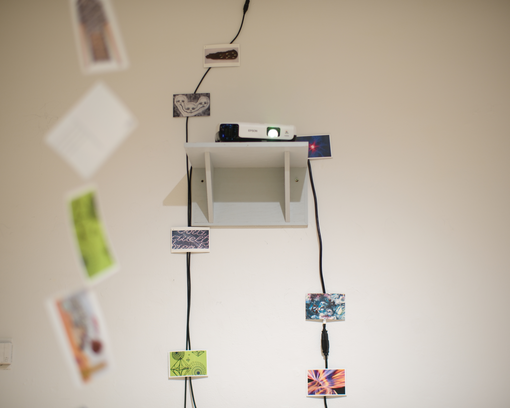
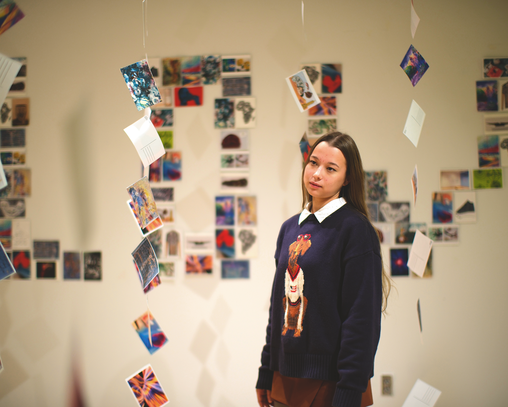
The depth camera was mounted using a custom wooden rig attached to the ceiling. It tracked movement within a roughly 3 × 3 meter area. The computer running the software was placed on a stand and covered with a wooden enclosure to prevent accidental interaction. All cables were routed along the walls, secured with duct tape, and visually integrated by covering attachment points with postcards. This decision allowed the technical infrastructure to become part of the exhibition rather than a distraction.
Even though the output was digital, I wanted the system to retain a sense of material presence. For me, hardware, sensors, mounts, and cables function like brushstrokes in painting. They reveal authorship, decision-making, and care.
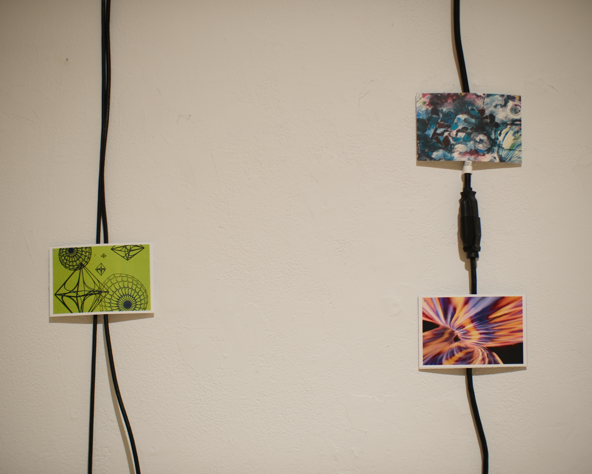
Final Exhibition Layout
Challenges and learning outcomes
This project felt like an intense, four-day hackathon. I spent approximately 60 hours problem-solving under tight time constraints.
Major challenges included:
Not everything went as planned. I shifted from a floor projection to a wall projection, built custom mounts when none were available, and found ways to visually integrate extensive cabling. The final solution exceeded my expectations and taught me that I can adapt quickly, make decisions under pressure, and complete complex installations without losing conceptual focus. This project gave me confidence in managing uncertainty and reinforced new technical and spatial practices I will carry forward in future work.
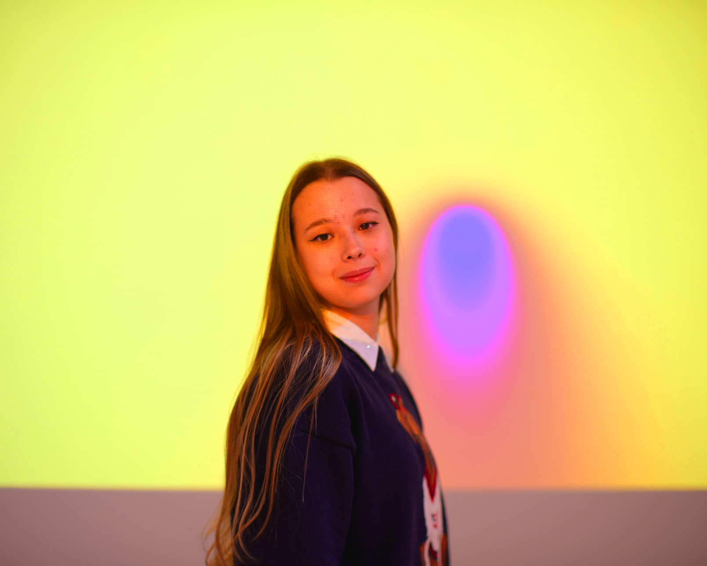
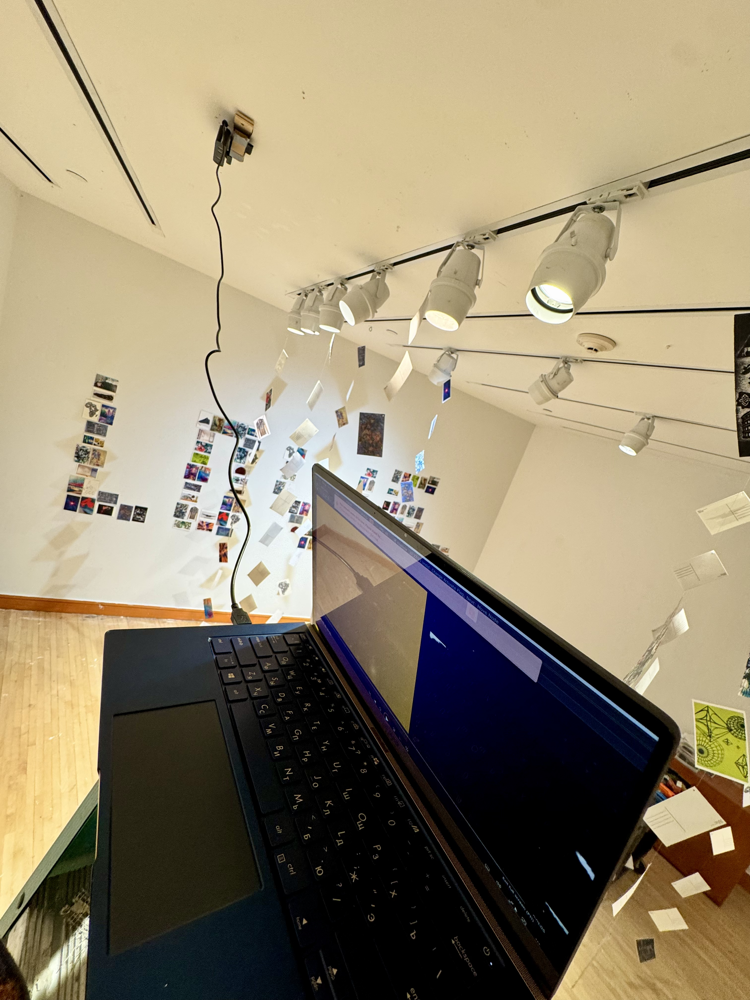